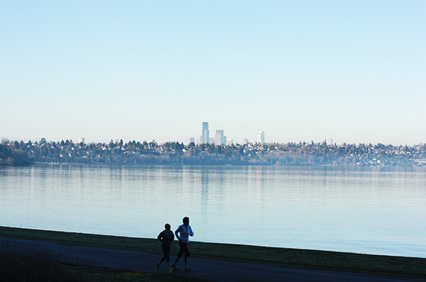
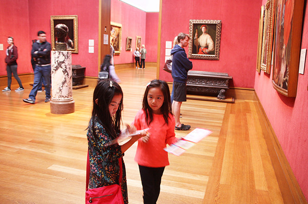
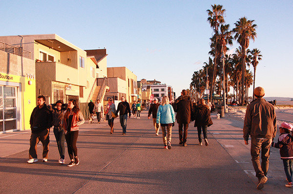
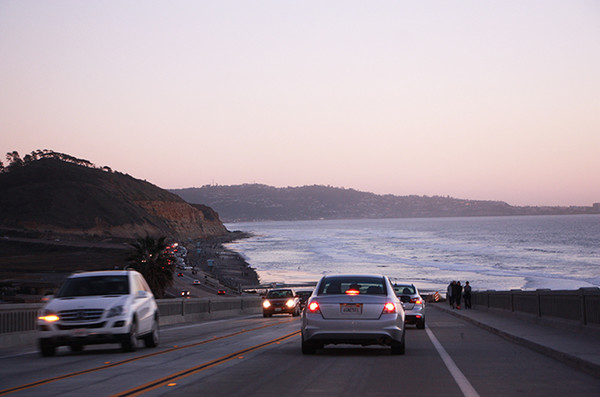
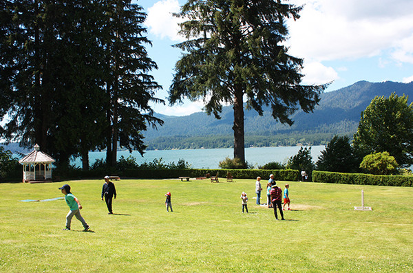

西雅图，你有一张前男友的脸
By 王小心 2017-06-13
蚂蚁窝旅行家专栏出品 | 已有5203人阅读
从洛杉矶飞往西雅图的班机说是三个小时，可是每次两小时就到。下了飞机，我突然被冻得瑟瑟发抖，抓过双排扣风衣的腰带紧紧绑好，才走进了料峭的春风中。西雅图什么时候变得这么冷了？我想。明明早上出门之前查过了，西雅图的温度和洛杉矶是一样的。
不得不承认，我被南加州的天气宠坏了。被公司从西雅图派到南加上班后，我遇到的大部分同事都来自南加。圣迭戈、尔湾、圣费南多山谷……全部都在方圆两百英里的范围之内。大部分在南加长大的人，终其一生也很难离开加州，因为适应不了其他地方的天气。加州的65度（华氏），和华盛顿州的65度截然不同。在西雅图觉得春意盎然的温度，在加州可能已经穿上了North Face。我一件从芝加哥带来的长及脚踝的羊绒大衣在加州再也没有用武之地，然而总是舍不得捐。哪个加州女人的衣橱里没有几件期待可以在几年一遇的寒流中穿出来的皮衣呢？
经历过漫长的、折磨人的适应过程，我终于在这片La La Land安了家。此刻回到西雅图，感觉就像回到了前男友的家中——你熟知这里的一切，信手拈来；你对这里充满了感情，甚至可以向新女友介绍这里的情况——然而，你不再属于这里。你是曾经的主人，然而现在只是过客。

（西雅图的清晨）
回西雅图的第一天晚上，我在酒店抱着暖气瑟瑟发抖。白天遇到的所有前同事都向我抱怨他们经历了一个多么惨痛的冬天，“你见过连续26天下雨没有见过太阳的吗？欢迎来到西雅图！”西雅图的冬天原本糟糕，然而去年由于拉尼娜天气的影响，分外糟糕。“本来我们冬天出去夏威夷或者南加州放一次风就够顶到来年春天了，可是现在都五月份了，你瞧瞧这天气！”他们看着我，好像我是罪魁祸首一样，而我也确实像抛弃了前男友而搭上新欢的女人一样，脸上浮现出了内疚的表情。
在西雅图的冬天里，天空中永远飘着毛毛细雨。我第一次来西雅图的时候是六月，山明水秀，我被绿色彻底洗刷了双眼冲击了灵魂，一度以为自己住在格林童话的森林中。我对这座城市一见钟情，从此把它当成家来对待——我在童年的老家、北京之后的第三个家。我以为要在这里住上很多年。于是，我容忍了它的很多缺点，比如地势陡峭、骑车不方便，比如亚裔太多，比如没有像样的博物馆和交响乐团，比如冬天的雨。就像你决定要嫁给这个男朋友、并且已经开始同居的时候，你容忍了他不洗澡不干家务不喜欢看文艺电影等等很多缺点，只因为他长得帅并且能给你讲笑话。
然而这种亲密关系突然被中止了，由于人与地点的包办婚姻，我来到了另一座城市。我是如此讨厌它，因为它几乎是西雅图的反义词：没有绿色，一丁点都没有。2015年的夏天，经历了七年大旱的洛杉矶简直就是一个沙漠。广播里都在讨论怎么用滴灌的方式浇自家花园可以省水，马路上别说看不到树了，连草坪都是棕色的，还美名其曰“我们是自豪的节水市民”。交通糟透了，来的第二天这辈子头一回车被追尾，转坐公共交通的第二周，莫名其妙地，我坐的轻轨竟然撞了汽车——是的，洛杉矶的轻轨也是要等红绿灯的。
这就像新男友把前男友所有的优点都变成了缺点。在包办婚的若干年后，我才慢慢意识到他的优点。不是因为La La Land这部电影，而是在无数次的周末，发现开车花十分钟就可以去Getty Center的山顶吹风，遥望贝叶湾（Bel Air）的同时随便看看梵高的《鸢尾花》之后；发现可以听到谭盾的讲座之后；发现圣诞节逛的罗迪欧大道（Rodeo Drive）也是好莱坞明星的衣橱之后；发现《盗梦空间》的导演诺兰在自己常去的AMC看电影之后；发现日落大道、穆赫兰道不但真有其路而且就在我家附近之后；发现《盗火线》就是在小区旁边的威尼斯大街拍的之后；发现雷蒙德钱德勒笔下的“休闲谷”就是San Fernando 山谷、南加富人的飞地之后。

（孩子们在Getty Center写作业）

（Venice海滩，Snapchat总部）
我不得不承认，这是一座伟大的城市，与天气无关，与交通无关，与空气指数也无关。它的伟大在于亦真亦幻，所有的地点都似曾相识，并因这似曾相识而带上了主观的色彩。这是一座同时存在于现实和想象中的城市，你尽可以抱怨交通、物价和治安，但也可以转头就在想象中构筑自己的城市地图。在自己的城市地图中，你有的只是独立书店、诺兰的签名和最快开到海底捞的路径，而非高昂的房价。

（南加州的通勤日常）
回到前男友的家，多少会因曾经对这里充满感情而最后黯然分手，而酸甜苦辣一起涌上心头。带着这样的感觉，我敲响了已经租出去的家的房门。这简直是八点档狗血剧中的高潮；你打开曾经存放你们记忆的抽屉，结果却放着新女友的化妆品。在后院的秋千架和滑梯上，曾经有我的孩子欢笑奔跑的身影；我本可以在这里一天天看着她长大（至少在不下雨的日子里可以），如今她已长大到秋千和滑梯承不住了，我们却已经住在另一个时空中。
开门的是一个中年男子，礼貌而冷漠。他告诉我他是本地人，韩裔，并没有请我进去的意思。我的五味瓶顿时被一盆冷水浇熄了。我稍稍踮起脚，越过他的肩膀，看到当年从网上买的那幅红色油画还挂在墙上，墙上是我们自己亲手涂的墙漆。当年为找到合适的颜色，我们起码刷掉了五桶小样。每个周末，我和女朋友们喝茶聊天，把娃们扔在一边放任玩耍，然而这一切，已经属于另一个人的人生。
而今，在万水千山之外，我的家在另外一座城市中，同样亲力亲为、全情投入。我突然觉得，城市的选择并非是理性的，而是主观而感性的。你永远无法比较一座城市与另一座城市孰好孰坏。若不是有非不得已的原因，我不会弃西雅图而选洛杉矶，然而西雅图真比洛杉矶好吗？磨合是痛苦的，但回过头看前尘往事，发现回忆只是放大了许多优点——感情正如城市一样，你爱它，可能只是因为你决定了爱它。

（西雅图的夏天）
中国的城市选择如今也越来越多了。美国人痛苦比较的芝加哥与洛杉矶的优劣、西雅图与华盛顿特区哪个更适合家庭，在中国也一样适用。“逃离北上广”的背后，是二线甚至三线城市的选择增多——虽然还没有美国那么多。在美国，从东部的纽约、波士顿、华盛顿，到中部的芝加哥，到西部的西雅图、旧金山、洛杉矶，机会均等的大城市就有不下十个。在中国，北京真的比上海好吗？北上广真的比二线城市好吗？家乡在发展、公司总部在深圳、女友觉得上海适合女孩子生活，怎么办呢？一百多个口红色号放在你面前、十几种可乐的口味放在你面前，总是下不去手。
事实是，有选择并不比没有选择更加轻松。城市的选择与男友的选择一样，本质都是生活的选择。无法列出一张表格，把北京和上海的优点缺点列出权重加以打分，因为某一地可能有温暖的回忆，纵使雾霾永远挥散不去；因为可能有太多的牵绊，你无法向那个看起来更好的生活义无反顾地飞奔而去；甚至可能只是因为习惯了现在的生活。也许有一个平行世界，我们在里面有不一样的生活，不同的工作，不同的男友和婚姻；然而，你仍然无法判断两种生活孰优孰劣。生活在别处永远是最高级的幻想，我们所能把握的，只是如今和当下而已。